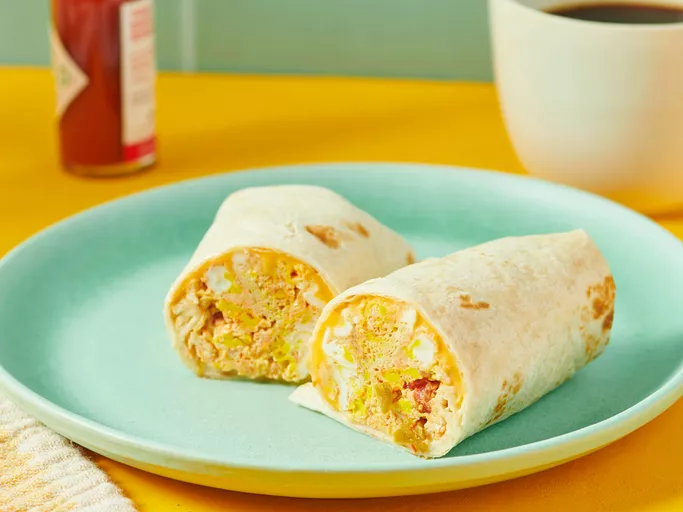

Home
Minute Breakfast Buritto

Decription
A fast DIY breakfast for the road that's made in minutes with scrambled egg, salsa, and cheese wrapped up in a tortilla.
Ingredients
- 2 large eggs
- 2 tablespoons salsa
- 1 slice reduced-fat American cheese
- 1 tortilla
Steps
- Gather all ingredients.
- Spray a cereal bowl with nonstick cooking spray. Crack the eggs into the bowl, add the salsa, and stir.
- Microwave on high for 1 minute, stir, and cook for another minute or until the mixture firms up.
- Place cheese in center of tortilla and top with egg mixture.
- Wrap it all up like a burrito and head for the car!